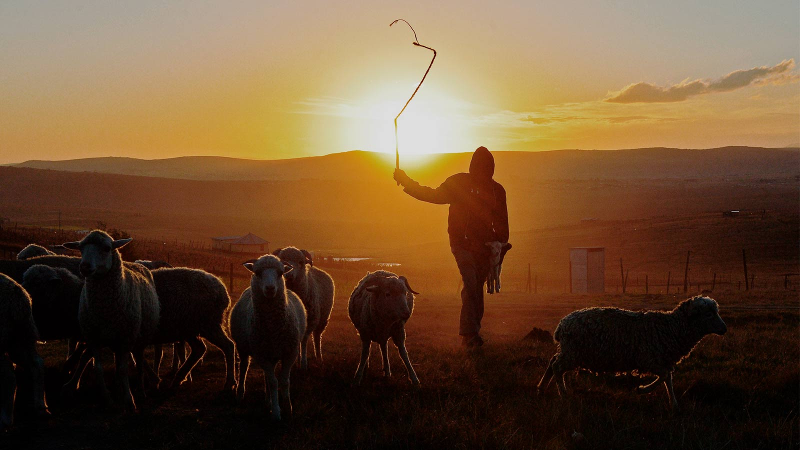

<body>
  <div id="carouselExampleCaptions" class="carousel slide" data-bs-ride="false">
    <div class="carousel-indicators">
      <button type="button" data-bs-target="#carouselExampleCaptions" data-bs-slide-to="0" class="active" aria-current="true" aria-label="Slide 0"></button>
      <button type="button" data-bs-target="#carouselExampleCaptions" data-bs-slide-to="1" class="active" aria-current="true" aria-label="Slide 1"></button>
      <button type="button" data-bs-target="#carouselExampleCaptions" data-bs-slide-to="2" class="active" aria-current="true" aria-label="Slide 2"></button>
      <button type="button" role="tab" id="slick-slide-control00" aria-controls="slick-slide00" aria-label="1 of 20" tabindex="-1"></button>
    </div>
    <div class="carousel-inner">
      <div class="carousel-item active">
        
      </div>
      <div class="carousel-item active">
        
      </div>
      <div class="carousel-item active">
        
      </div>
    </div>
    <button class="carousel-control-prev color" type="button" data-bs-target="#carouselExampleCaptions" data-bs-slide="prev">
      <span class="carousel-control-prev-icon" aria-hidden="true"></span>
      <span class="visually-hidden">Previous</span>
    </button>
    <button class="carousel-control-next" type="button" data-bs-target="#carouselExampleCaptions" data-bs-slide="next">
      <span class="carousel-control-next-icon" aria-hidden="true"></span>
      <span class="visually-hidden">Next</span>
    </button>
  </div>
<br>
  <footer class="colorun">
    <div  class="banner-wrapper">
      <div class="icon-text">
        <div class="icon-text-icon">
          <H2 class="sobren nav-link">SOBRE NOSOTROS</H2>
        </div> <div class="large-4 columns">
          <ul class="cro_footwidget">
            <li id="text-2" class="widget-container widget_text clear">
              <div class="cro-sidebar-inner">
                <div class="textwidget colores adress">
                  <br>
                  <p>
                    Tunja - Boyacá
                  </p>
                  <p>
                    Dirección: Carrera 7b #51 - 20. Las Granjas
                  </p>
                  <p>
                    Teléfono: 311 2089172
                  </p>
                      <h2>SÍGUENOS</h2>                  
                    <p href="#skills">
                      <a href="http://facebook.com/JesusAutorDeVida"  target="_blank" class="tamañoface">
                        <i class="fa fa-facebook"></i>
                      </a>
                    </p>
                </div>
              </div>
            </li>
          </ul>
        </div>
      </div>
    </div>
  </footer>
  <footer class="negro">
    <div class="large-6 columns">
      <br>
      <div id="site-cnt" class="centralist">
        <a class="title"> Iglesia Bautista Reformada De Tunja © (2022) </a>
      </div>
    </div>
  </footer>
</body>

